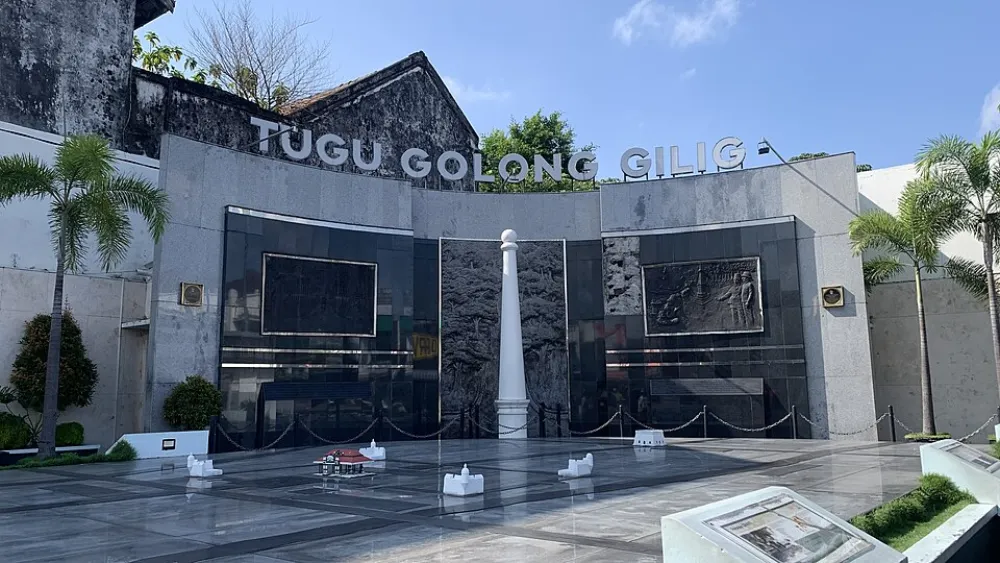

Jejak Sejarah Yogyakarta
Sepuluh penanda waktu dari berdirinya candi-candi Mataram Kuno, pembukaan Hutan Beringan, masa ibu kota perjuangan, hingga pengakuan Sumbu Filosofi oleh UNESCO.
0
tahun sejak 1755
Dua wajah Tugu
Geser garis pembatas untuk membandingkan kisah Golong Gilig dan Tugu Pal Putih. Foto Golong Gilig adalah monumen pengingat masa kini, bukan foto asli tahun 1755; foto Pal Putih juga menampilkan wujudnya sekarang.


Runtuh karena gempa10 Juni 1867
Berdiri kembali3 Oktober 1889
Perubahan tinggi±25 m → 15 m
Perubahan wujudSilinder → Persegi
Poros Sumbu Filosofi
Garis imajiner utara–selatan yang menata ruang kota sekaligus merangkum perjalanan hidup manusia Jawa. Ketuk tiap titiknya.
Uji ingatan sejarahmu
Empat pertanyaan singkat dari catatan linimasa dan Sumbu Filosofi di atas.